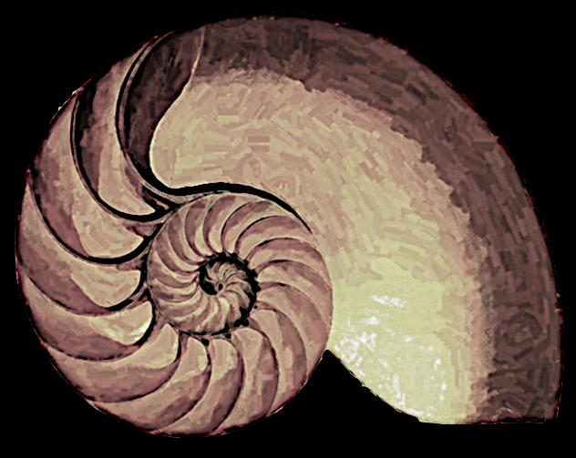

Here you can experiment with an iterated similarity (a rotation followed by a scaling) that operates on a given image.
The starting image will be slightly rotated around a center
and then slightly scaled some amount. The resulting new image is drawn. After this the same process is applied to the new image. This process is repeated over and over again.
The program on the right allows to select different images. By dragging the points you can alter the position of the image and change the similarity operation.
|
 |
Sketch of a nautilus